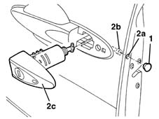
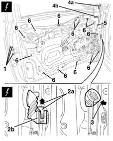
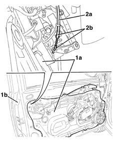
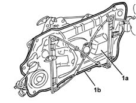

7005A08 interior support frame of one side door r r with door panel removed
- Path
- Procedures > 70 FITTINGS > 7005 PASSENGER COMPARTMENT FRONT SIDE DOORS > 7005A front side door assembly > 7005A08 interior support frame of one side door r r with door panel removed
- Kind
- repair procedure (removal / refitting; the operation number is the code)
- Applies to
- all engines; all production periods
- Interactive page
- https://sloeber94.github.io/elrnDB-lYpsln/en/#/2429476
Applies to: all engines; all production periods
 Removing
Removing
 Refitting
Refitting7005D14 front side door descending window glass - r r with door panel (and mount frame) removed
1. Release the cover from the opening.
2. Working via the opening (2a), loosen the inner bolt (2b) until the lock barrel assembly (2c) can be released.

Applies to: all engines; all production periods
1. Undo the lock bolts
2. Lift up the ring nut (2a) and disconnect the electrical connection for the door (2b).
 | Name | Connector |
|---|---|---|
2b | Rear coupling for /front door. driver's side |
| Name | Connector |
|---|---|---|
2b | Front passenger door/ rear coupling. |
3. Introduce the door electrical connection as far as possible into the door.
4. Disconnect the electrical connections (4a), (4b).
| Name | Connector |
|---|---|---|
4a | Driver's external rear view mirror |
| Name | Connector |
|---|---|---|
4a | Exterior passenger side rear view mirror |
| Name | Connector |
|---|---|---|
4b | Front door anti-crush sensor |
| Name | Connector |
|---|---|---|
4b | Front door anti-crush sensor |
5. Release the wiring retainer.
6. Undo the bolts.

Applies to: all engines; all production periods
1. Move the frame assembly (1a) slightly away from the door (1b).
2. Disconnect the cable (2a) connected to the outer handle from the lock retainers (2b).

Applies to: all engines; all production periods
If necessary, continue 7205E37 STRIPPING FRONT SIDE DOOR INNER SUPPORT FRAME
Applies to: all engines; all production periods
Refitting
RemovingCheck that the frame is not damaged.
1. Before positioning the frame (1a), check that the perimeter seal (1b) is intact and clean. Also check that the support surface of the door frame is clean.

Applies to: all engines; all production periods
Place the frame in position.
Connect the connecting cable with the outer handle to the lock retainers.
Tighten the frame fixing bolts.
Engage the wiring retainers.
Connect the electrical connections.
Tighten the catch retaining bolts.
Position the lock barrel, tighten the bolt and refit the cover.
7005D14 front side door descending window glass - r r with door panel (and mount frame) removed
Topics linked from this page (8)
- 7005D14 front side door descending window glass - r r with door panel (and mount frame) removed
- 7205E37 STRIPPING FRONT SIDE DOOR INNER SUPPORT FRAME
- D30 Rear coupling for /front door. driver's side
- D31 Front passenger door/ rear coupling.
- K22 Front door anti-crush sensor
- K23 Front door anti-crush sensor
- P60 Driver's external rear view mirror
- P61 Exterior passenger side rear view mirror
Topics that link to this page (12)
- 5505B11 front door wiring - r r
- 7005A09 front side door interior support farme r r
- 7005A28 front side door limiter- repair or replace
- 7005C08 front door exterior handle mount (one), lh or rh - r r
- 7005C09 front door outer handle mount (1), lh or rh - r r with door panel removed
- 7005C50 front side door interior opening mechnism r-r for repair or replacement with door panel removed
- 7005C51 front side door inner catch device - r+r for repair or replacement
- 7005D19 (One), LOWERING WINDOW CHANNEL left or right for front side door on vehicles with anti-crush sensor - R.R.
- 7005M26 ONE FRONT DOOR ELECTRIC WINDOW MECHANISM', LEFT OR RIGHT - R.R .
- 7005N21 front side door lock motor-lock assembley-r r
- 7205E36 Stripping FRONT SIDE DOOR
- 7205E37 STRIPPING FRONT SIDE DOOR INNER SUPPORT FRAME